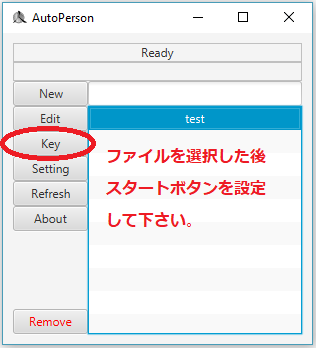
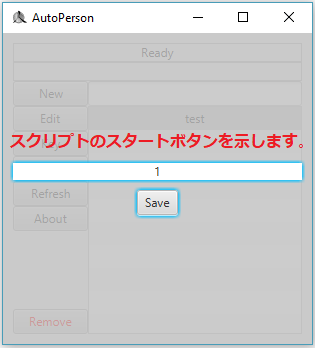
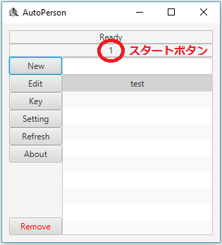
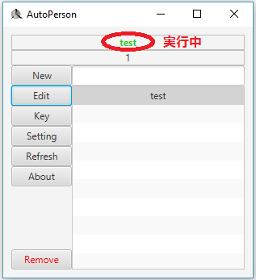

今回はファイルを実行してみましょう。
先ずスタートボタンの設定をします。
実行しようとするファイルを選択してkeyボタンをクリックして下さい。

ご希望のキーボードのキーを押してSaveボタンをクリックしてください。
今押したキーボードのキーがスタートボタンになります。

下に見えるとおり設定されたスタートボタンを確認する事ができます。

今設定したスタートボタンを押すとファイルが実行されます。
緑字で実行中のファイルが表示されます。

実行が終了されると”Ready"の状況に戻ります。
実行中にスタートボタンをもう一回押すと実行が終了されます。